Marrakech est l'une des destinations les plus emblematique du Maroc, celebre pour sa medina, ses jardins et ses monuments historiques.
Animee de jour comme de nuit, elle combine heritage imperial, artisanat et art de vivre marocain.
Entre souks colores, riads traditionnels et places populaires, la ville offre une experience unique et intense.
Sites a visiter
01
Jemaa el-Fna
Place iconique de Marrakech, vivante en permanence avec artistes de rue, etals et ambiance populaire.
Source d’eau naturelle située à la sortie de la médina, Ras El Maa est un lieu rafraîchissant où les habitants viennent se détendre. On y trouve aussi de petits cafés avec vue sur les montagnes.
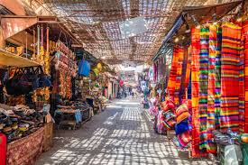
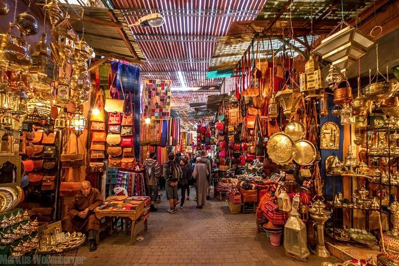
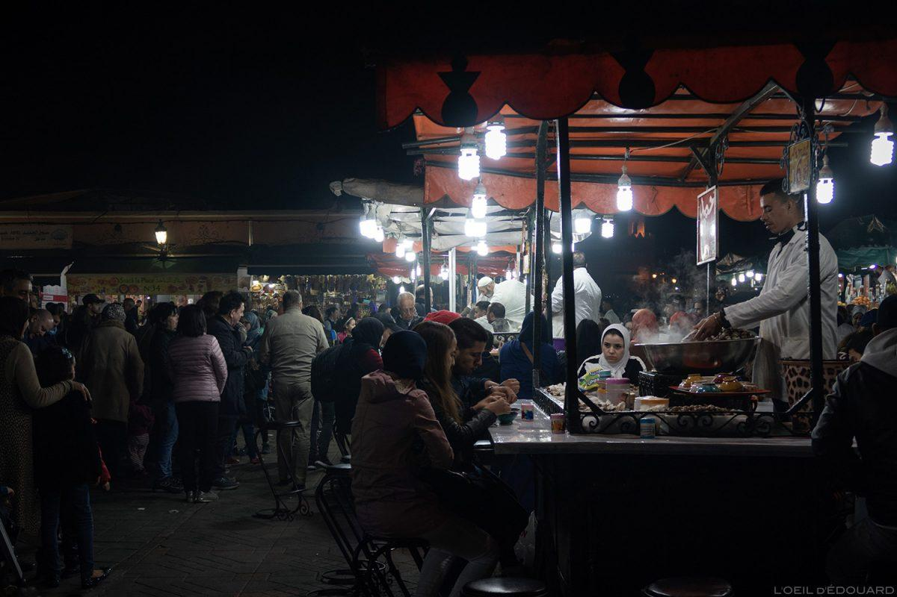
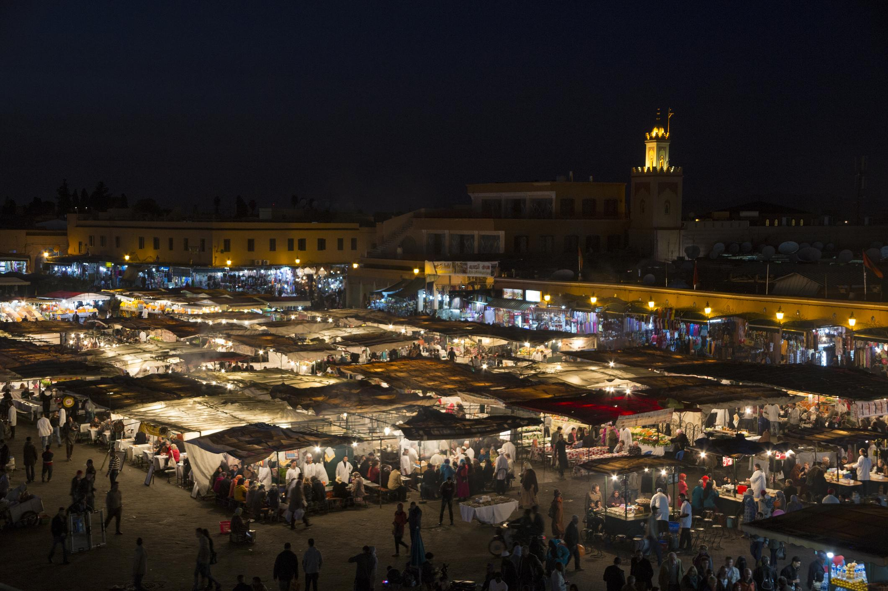
02
Jardin Majorelle
Jardin botanique emblematique, connu pour ses couleurs intenses et son atmosphere paisible.
Jardin botanique célèbre pour ses couleurs vives et son ambiance paisible. Il abrite également le musée Yves Saint Laurent.
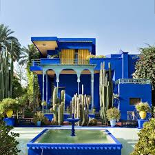
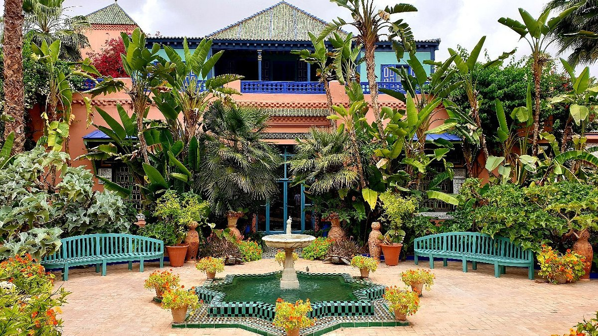
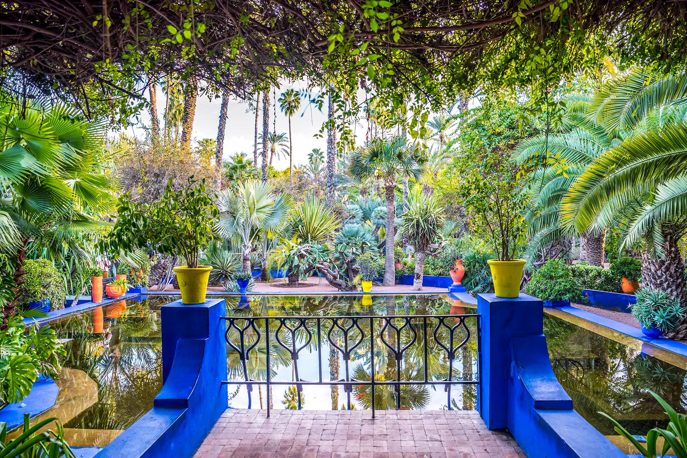
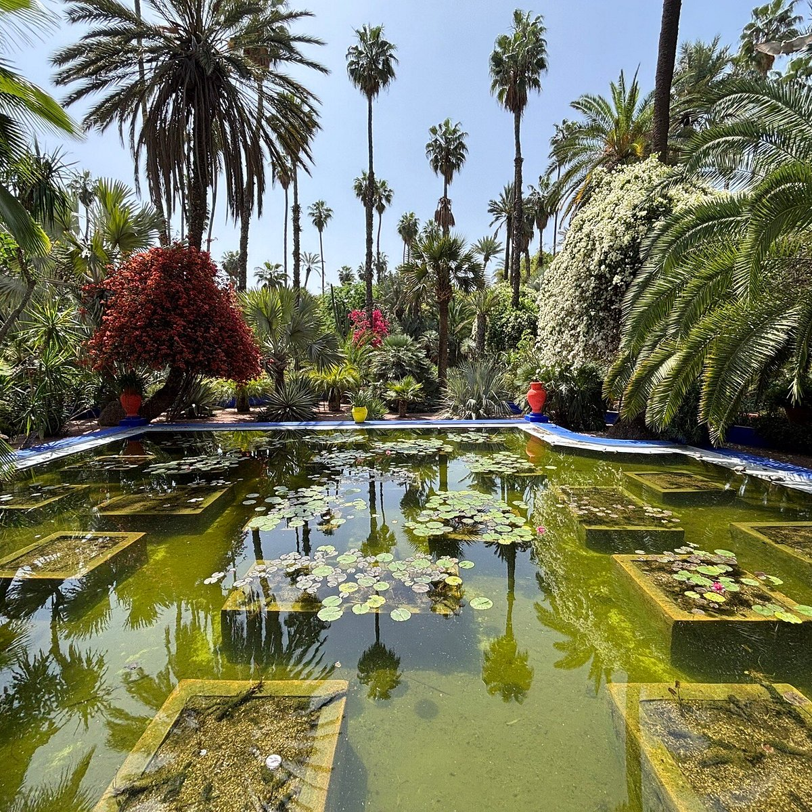
03
Mosquee Koutoubia
Monument majeur de la ville, visible de loin grace a son minaret historique.
Monument emblématique de la ville avec son minaret impressionnant visible de loin. Symbole historique et architectural de Marrakech.
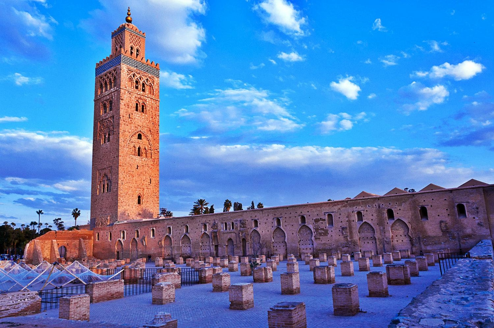
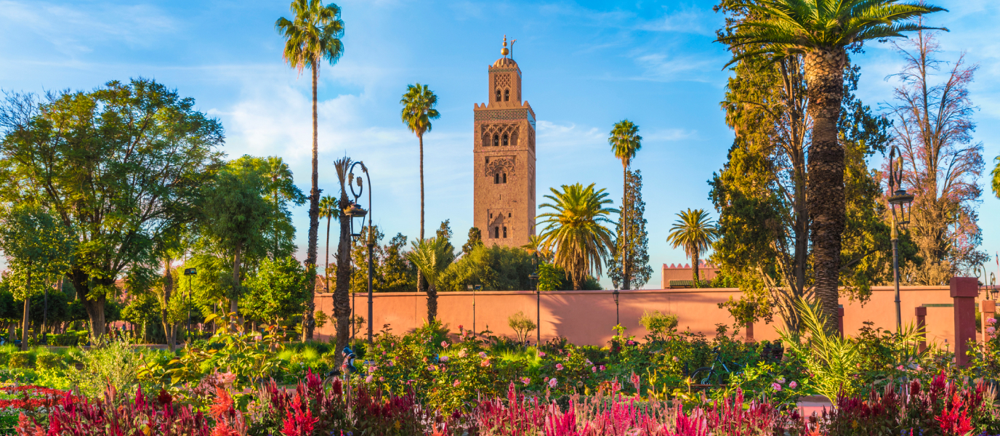
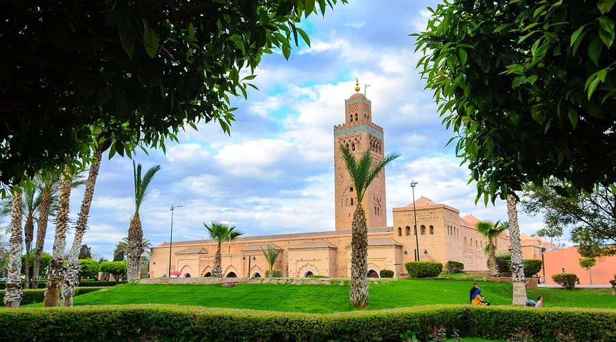
04
Palais Bahia
Palais du XIXe siecle aux patios elegants, symbole de l'architecture traditionnelle marocaine.
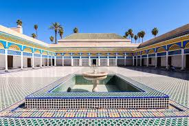
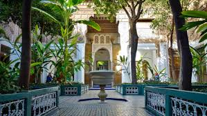
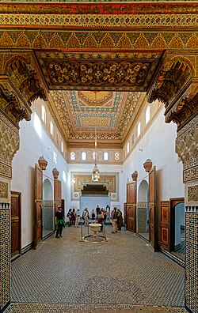
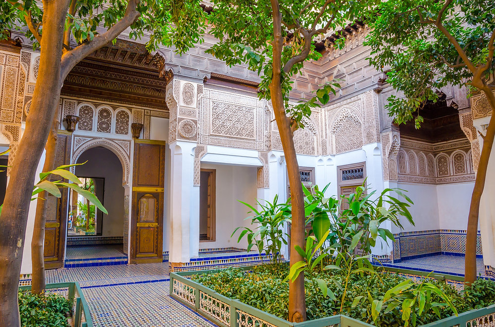
Gastronomie
Saveurs de la ville rouge
01
Tangia marrakchia
Specialite locale cuite lentement dans un pot en terre.
02
Tagine kefta
Boulettes sauce tomate, oeufs et epices marocaines.
03
Brochettes de Jemaa el-Fna
Cuisine de rue emblematique de la place centrale.
04
Patisseries marocaines
Cornes de gazelle et chebakia accompagnees de the.